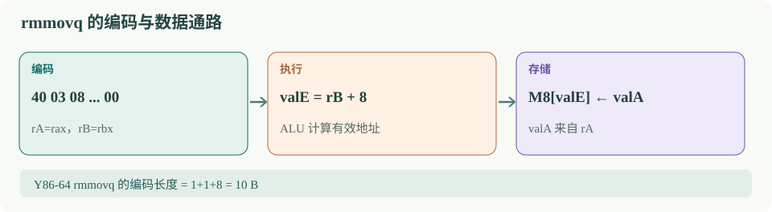

CPU 如何读懂
一串字节？
先定义机器“能看见什么”，再顺着一条 irmovq 指令走过编码、控制信号与 SEQ 数据通路。
程序员看到的是 irmovq $0x1122334455667788, %r8。硬件收到的却只有十个字节。指令集体系结构（ISA）是一份双方都必须遵守的契约：怎样编码、读写哪些状态、执行后必须得到什么结果。它没有规定内部必须使用多少流水级。
先划清边界：哪些是“程序员可见状态”？
Y86-64 是 CS:APP 第三版第 4 章使用的教学 ISA，并非真实 x86-64 的子集实现。它保留了寄存器传送、算术、跳转、栈和内存读写等主要概念，但编码更规整。
15 个寄存器
寄存器编号 0–E：%rax 至 %r14；0xF 表示 RNONE（无寄存器），不是 %r15。
状态与标志
PC、条件码 ZF/SF/OF 与 Stat（AOK、HLT、ADR、INS）参与执行语义。
小端内存
内存按字节寻址，64 位立即数与内存中的八字节整数按小端顺序保存，低有效字节位于低地址。
基础指令家族包括 halt、nop、条件传送 cmovXX、irmovq、rmmovq、mrmovq、OPq、jXX、call、ret、pushq 和 popq，共 12 类。条件传送、条件跳转及算术指令各有功能码变体。rmmovq 把寄存器写到内存；mrmovq 方向相反。
把一条指令剖成三个字段
irmovq 的第一个字节是 icode:ifun，第二个字节是 rA:rB，后面跟 8 字节立即数。选择 %r8 作为目的寄存器时，寄存器字节为 f8。
irmovq $0x1122334455667788, %r8 的教学编码。每两个十六进制字符为一个字节；字节地址从左向右递增。irmovq $0x1122334455667788, %r8
# 30 f8 88 77 66 55 44 33 22 11
# 10 字节：1 opcode + 1 register + 8 immediate
addq %r8, %rax
# 60 80 (rA=8, rB=0；结果写入 %rax)若将立即数误写成从 11 到 88，处理器解码出的数会不同。小端是每个多字节数值内部的字节顺序，不是说指令的操作码要倒着存放。
“读哪个寄存器”可以写成一个电路选择器
硬件控制语言 HCL 的方括号不是按时间依次执行的 if。它在描述多路复用器（MUX）：所有输入同时存在，满足条件的分支决定输出信号。以 srcA 为例：
int srcA = [
icode in { IRRMOVQ, IRMMOVQ, IOPQ, IPUSHQ } : rA;
icode in { IPOPQ, IRET } : RRSP;
1 : RNONE;
];逐项追问：addq 需要读取 rA，ret 需要读取 %rsp，halt 无需从寄存器读取操作数。1 : RNONE 是兜底输入，不是“先把某个寄存器清零”。
SEQ 的“六个阶段”为什么不是六个时钟周期？
在 CS:APP 的 SEQ 设计中，一条指令沿 Fetch → Decode → Execute → Memory → Write Back → PC Update 的组合逻辑传播，一次时钟边沿完成本条指令的状态更新。六个名称是推导数据通路的逻辑分段，并不表示每个分段占一个独立周期。代价是时钟周期要容纳较长的关键路径。
例如 addq %rbx, %rcx：Fetch 取出 60 31；Decode 读取 %rbx 和 %rcx；Execute 做 valB + valA 并更新条件码；Memory 不访问数据存储器；Write Back 把 valE 写入 %rcx；PC Update 选择 valP。这些信号都沿当前指令的组合路径传播。
CISC 与 RISC 是 ISA 风格，不是速度标签
x86-64 支持可变长指令与丰富的寻址方式；RISC-V 基础整数指令通常有规整的固定宽度编码，并提供可选压缩指令扩展。两者的区别不能化约为“哪个一定更快”。现代高性能 x86 处理器通常将外部指令解码为内部微操作，但内部设计细节因厂商和微架构而异。
Y86-64 保留了可变长编码、栈操作与条件码，因此更适合看作简化了的教学 ISA，而非某一真实 RISC 芯片的规格书。
自检：不用模拟器，也能核对编码
把第一个例子的立即数按 8 字节小端顺序手工写出，再反向拼回一个 64 位数。下面这段 Python 3 标准库代码会验证结果；它检验编码规则，不假装运行了完整的 SEQ 硬件。
value = 0x1122334455667788
encoded = bytes([0x30, 0xF8]) + value.to_bytes(8, "little")
assert encoded.hex(" ") == "30 f8 88 77 66 55 44 33 22 11"
assert int.from_bytes(encoded[2:], "little") == value
print(encoded.hex(" "))理解迁移：第 8 章解释“一条指令必须做什么”；第 9 章解释“怎么让多条指令重叠执行”。
技术推导 · 08
一条存储指令的数据，究竟从哪来、写到哪里？

以教学 ISA Y86-64 的 rmmovq %rax, 8(%rbx) 为例，它被编码成 40 03 08 00 00 00 00 00 00 00：第一个字节是指令种类，第二个字节指定 rA=0（%rax）、rB=3（%rbx），后 8 字节是小端位移 8。这不是 x86-64 实际编码。
| 阶段 | 信号值 | 职责 |
|---|---|---|
| Fetch | valC=8，valP=PC+10 | 取出指令并计算顺序后继 |
| Decode | valA=R[%rax]，valB=R[%rbx] | 读源值与基址 |
| Execute | valE=valB+8 | 得到有效地址 |
| Memory | M8[valE] ← valA | 写入连续 8 字节 |
| Write back | dstE=dstM=RNONE | 不写回通用寄存器 |
若 %rbx=0x1000、%rax=0x1122334455667788，则目标地址是 0x1008，按 Y86-64 小端内存模型，写入的字节依次为 88 77 66 55 44 33 22 11。位移字节和被写入的值是两条不同的数据来源。
执行 python3 examples/deep-ch05-12.py 08 检查 10 字节编码和内存结果；官方可查证资料为 CS:APP 3e 第 4 章图目录与 SEQ/PIPE HCL 描述。
参考与边界
- R. Bryant、D. O'Hallaron，《Computer Systems: A Programmer's Perspective》第 3 版，第 4 章“Processor Architecture”。
- CS:APP 官方章节图目录，图 4.3（Y86-64）、图 4.22（SEQ）等可供交叉核对。
- RISC-V 已批准规范；本章仅对 ISA 设计原则作定性比较。
本章中的编码与 SEQ 图是自绘简化教学模型；不表示门级电路、路径实测延迟或芯片指标。